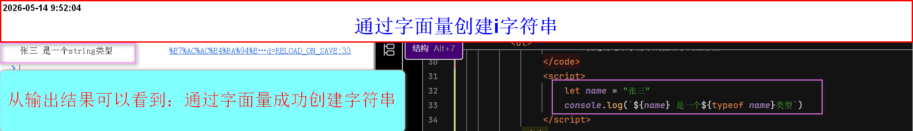
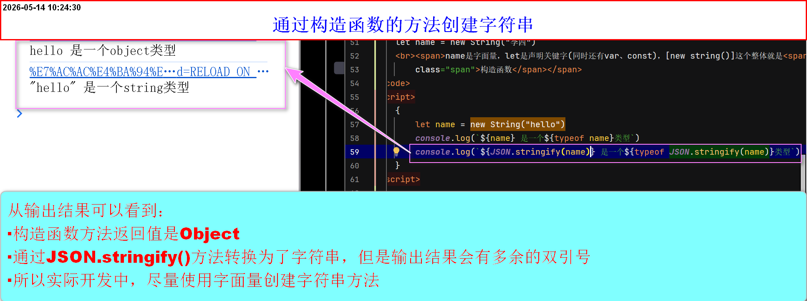
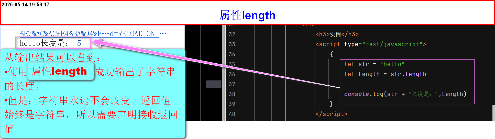
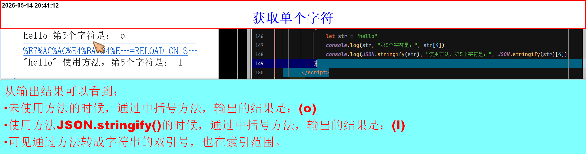
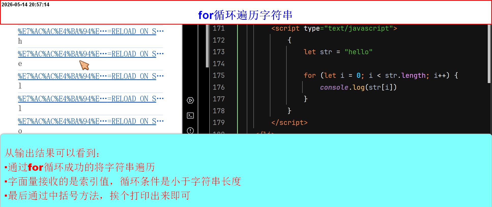
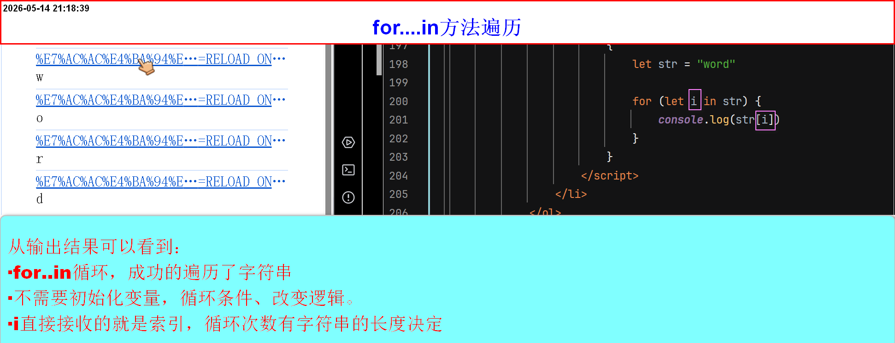
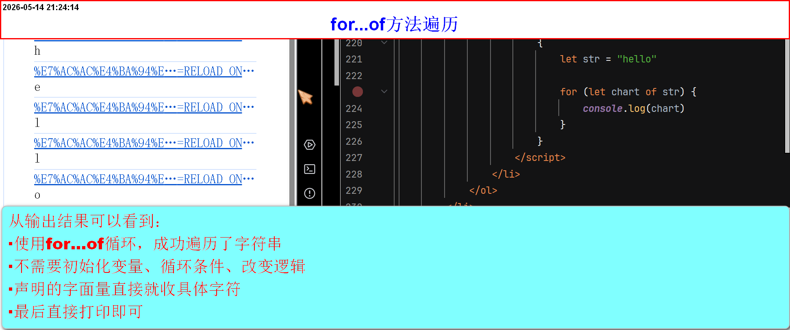

字符串的基本操作
-
创建字符串方法
-
通过字面量
- 语法：
let(const、var) 字面量 = "内容" - 总结就是：通过双引号包裹的值，再赋值给字面量(也可以理解位变量)，同样需要先声明
-
案例
let name = "张三"
name就是字面量，let是声明关键字(同时还有var、const)，【"张三"】这个整体是一个字符串
就是将这个字符串赋值给字面量存储
- 语法：
-
通过构造函数
- 语法：
let(const、var) 字面量 = new String("内容") - 总结就是：构造函数就是一个函数，配合 new 调用
- new 构造函数() 这个整体是一个表达式，它的值就是新创建的对象。
- 值是一个对象，需要通过
JSON.stringify()方法，输出成字符串，但是：输出结果被双引号包裹,所以实际开发应该避免使用构造函数的方式，创建字符串 - 注意：实际开发中，字符串基本都用字面量（"..."），很少用 new String
-
案例
let name = new String("李四")
name是字面量，let是声明关键字(同时还有var、const)，[new String()]这个整体就是构造函数
- 语法：
-
String类型的注意事项
- 使用点语法或中括号访问时，字符串会临时转换为 String 对象
- 构造函数创建的字符串是永久的 String 对象
- 因为被转换为String对象，所以拥有属性和方法(length、slice.....)
-
总结
- 字符串是原始类型，不是对象，但可以像对象一样调用方法，这是因为 JS 自动进行了装箱操作。
- 字符串字面量：不可变、能查(索引/方法)、改、增、删都会产生新字符串，无法保留自定义属性
- 自动装箱：点语法和中括号访问时、临时变成对象、用完(调用完方法或使用属性)即毁、所以不能用变量接收String对象， 但是通过(调用方法或使用属性)所返回的值会被保留下来
- 调用方法或使用属性如果只要使用一次，则最好打输出结果直接使用，并不需要声明变量接收返回值反之，如果要复用，则声明变量接收返回值
- new String:创建真实对象，可挂属性，但类型为object，不推荐使用，仅需知道概念
- new String 创建的对象与原始字符串类型不同（typeof 为 object），容易引发 === 比较的 bug，所以实际开发完全不用。
一些常用操作
-
属性
length- 该属性作用：返回字符串的长度
- 语法：
字面量.length - 返回值是数字(字符串长度【number类型】)，所以直接引用或声明变量接收返回值【按需求来】
- 只能读，不能写，也就是无法更改原字符串
-
实例

-
访问String对象，字符串的单个字符
- 通过中括号+索引的方式
- 语法：
字面量[索引] - 注意：索引从0开始
- 通过方法
JSON.stringify()转成的字符串，双引号也占索引位子 - 两种创建字符串的方式，都支持这种方法
- 只能读，不能写，也就是无法更改原字符串
-
实例

-
字符串的遍历(同样只读，不能更改)
-
for
- 通过for循环，获取索引，通过中括号依次打印字符
- 语法：
for (let(const、var) 字面量; 字面量 < 字符串的字面量.length; 字面量++){代码块} - 总结就是：声明字面量(变量)，接收索引，循环条件小于字符串的长度(因为索引从0开始)，
改变逻辑，字面量自增【这样就获取了所有索引】，最后通过中括号即可 -
实例

-
for....in
- 通过for..in循环，获取索引值，然后依次打印字符
- 语法：
for (let(const、var) 字面量 in 字符串的字面量){代码块} -
总结就是：声明字面量，接收索引值，然后
in关键字，字符串的字面量，该方法，不需要初始化变量，循环条件，改变逻辑循环次数会自动按字符串长度决定，会直接将索引值赋值给字面量(for循环声明的)这样就获取了所有索引值，最后通过中括号方法即可 -
实例

-
for....of
- 通过for..of循环，直接获取字符，然后依次打印字符
- 语法：
for (let(const、var) 字面量 of 字符串的字面量){代码块} -
总结就是：声明字面量，接收索引值，然后
of关键字，字符串的字面量，该方法，不需要初始化变量，循环条件，改变逻辑循环次数会自动按字符串长度决定，会直接将字符赋值给字面量(for循环声明的)这样就获取了所有字符，最后直接打印即可 -
实例

-
-